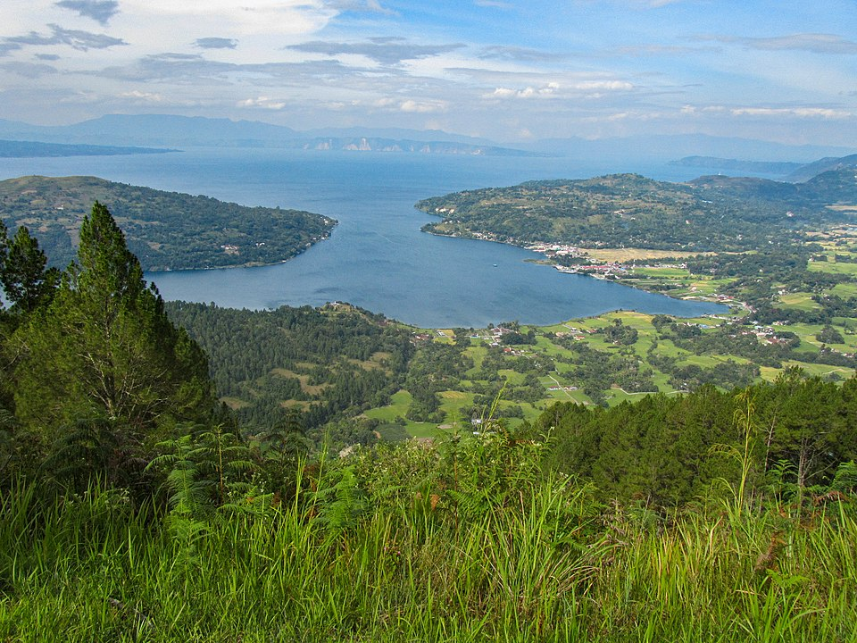
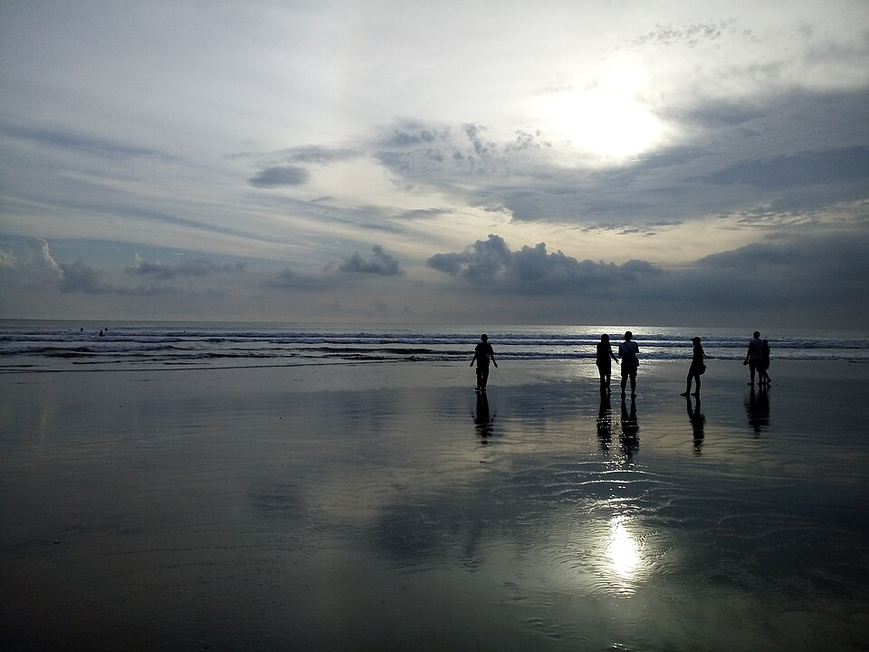
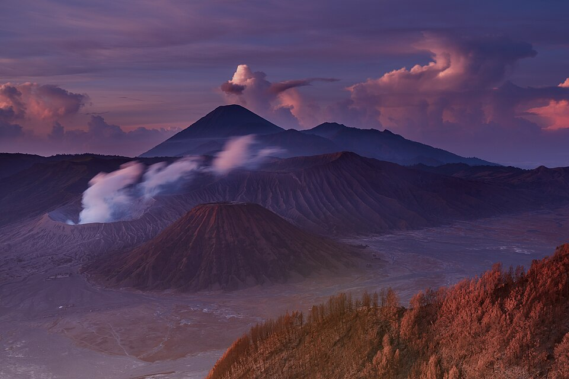
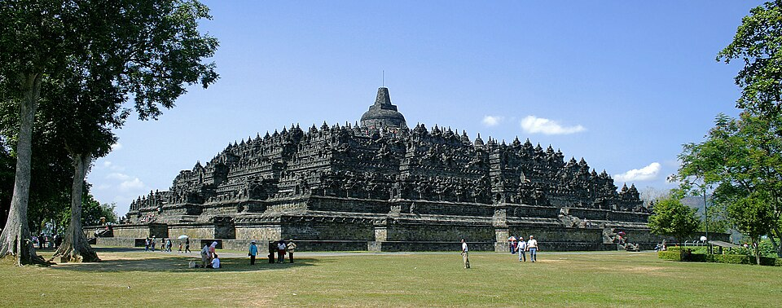

Wisata Alam
Indonesia memiliki hutan tropis, danau, air terjun, dan taman nasional yang menakjubkan. Salah satunya adalah Danau Toba di Sumatera Utara, danau vulkanik terbesar di dunia yang terbentuk dari letusan dahsyat gunung purba sekitar 74.000 tahun lalu. Di tengahnya terdapat Pulau Samosir, pusat budaya suku Batak Toba.

Wisata Pantai
Sebagai negara kepulauan dengan garis pantai terpanjang kedua di dunia, Indonesia punya banyak pantai indah. Pantai Kuta di Bali terkenal dengan pasir putihnya, ombak yang cocok untuk belajar berselancar, dan pemandangan matahari terbenam yang memukau.

Wisata Pegunungan
Indonesia berada di jalur Cincin Api Pasifik sehingga memiliki ratusan gunung berapi. Gunung Bromo di Jawa Timur adalah gunung favorit wisatawan. Pengunjung biasanya datang dini hari untuk menyaksikan matahari terbit dari Penanjakan, lalu menyeberangi lautan pasir menuju kawah Bromo.

Wisata Sejarah
Banyak peninggalan kerajaan masa lalu yang masih berdiri hingga kini. Candi Borobudur di Magelang, Jawa Tengah, dibangun pada abad ke-8 oleh Dinasti Syailendra dan merupakan candi Buddha terbesar di dunia. Candi ini memiliki 2.672 panel relief dan 504 arca Buddha, serta diakui UNESCO sebagai Warisan Dunia.

10 Destinasi Wisata Indonesia
- Danau Toba (Sumatera Utara)
- Candi Borobudur (Jawa Tengah)
- Gunung Bromo (Jawa Timur)
- Pantai Kuta (Bali)
- Raja Ampat (Papua Barat Daya)
- Taman Nasional Komodo (Nusa Tenggara Timur)
- Danau Kelimutu (Nusa Tenggara Timur)
- Tana Toraja (Sulawesi Selatan)
- Kawah Putih (Jawa Barat)
- Kepulauan Derawan (Kalimantan Timur)
Informasi Destinasi
| Nama | Lokasi | Jenis | Keunikan |
|---|---|---|---|
| Raja Ampat | Papua Barat Daya | Wisata bahari | Memiliki keanekaragaman terumbu karang tertinggi di dunia |
| Taman Nasional Komodo | Nusa Tenggara Timur | Wisata alam | Habitat asli komodo, kadal terbesar di dunia |
| Danau Kelimutu | Nusa Tenggara Timur | Wisata pegunungan | Tiga danau kawah yang warnanya bisa berubah-ubah |
| Tana Toraja | Sulawesi Selatan | Wisata budaya | Rumah adat Tongkonan dan upacara pemakaman Rambu Solo |
| Kawah Putih | Jawa Barat | Wisata alam | Danau kawah berair putih kehijauan di Ciwidey, Bandung |
Wisata Impian Kami
Kami ingin sekali menjelajahi wilayah timur Indonesia yang terkenal dengan keindahan alam bawah lautnya, terutama Raja Ampat. Selain itu, kami juga ingin melihat langsung komodo di habitat aslinya dan menyaksikan matahari terbit dari puncak gunung.
- Menyelam di Raja Ampat, Papua Barat Daya
- Melihat komodo di Pulau Komodo
- Menikmati matahari terbit di Gunung Bromo
- Mengunjungi Danau Kelimutu yang berwarna-warni
- Berkeliling Pulau Samosir di Danau Toba